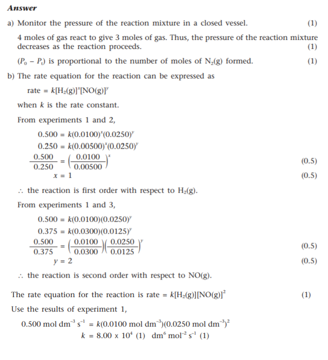

2021-10-09 (Answers)
Question 1
c) Initially, 0.3g of NO and 0.1g of H2 is injected into a closed system of size 0.2 dm3. Calculate the rate of formation of water vapor:
(Assume the activation energy of the reaction = 30 kJ/mol)
i) at 750 °C.
Molar mass of NO = 30gmol-1
Molar mass of H2 = 2gmol-1
Rate = 2 * k * [NO]2 * [H2]
= 2 * 8.00 * 104 * [(0.3/30)/0.2]2 * (0.1/2)/0.2
= 100 mol dm-3 s-1
ii) at 250 °C.
k = A * exp(EA/RT)
k523 K = A * exp(EA/RT523 K)
k1023 K = A * exp(EA/RT1023 K)
k523 K/k1023 K = exp(EA/R*(1/T1023 K - 1/T523 K))
k523 K = k1023 K * exp(EA/R*(1/T1023 K - 1/T523 K))
k523 K = 2740 dm6 mol-2 s-1
Rate = 3.43 mol dm-3 s-1